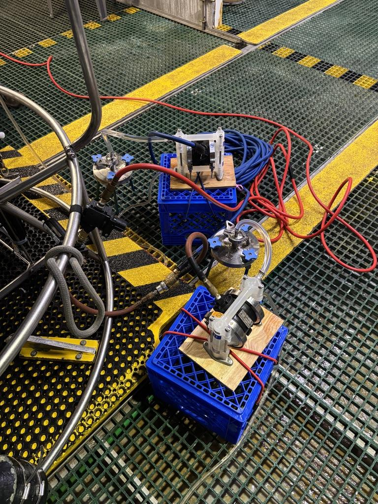
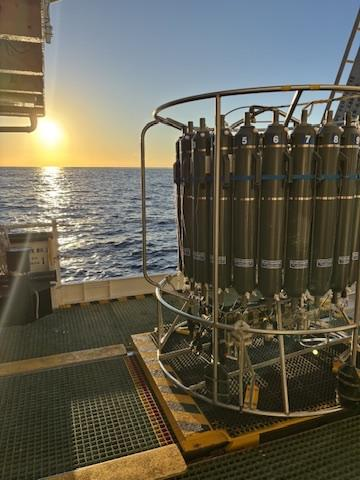
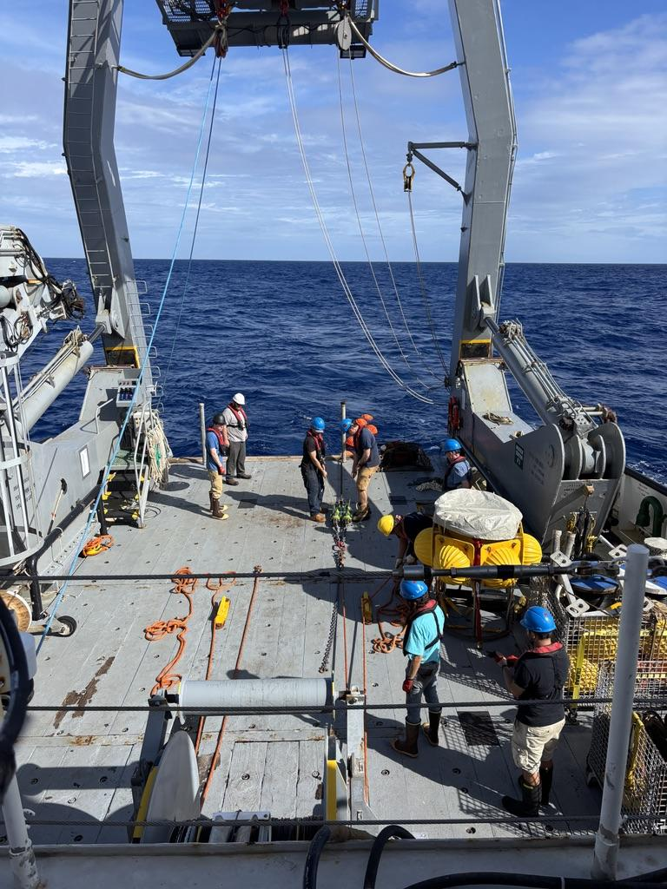
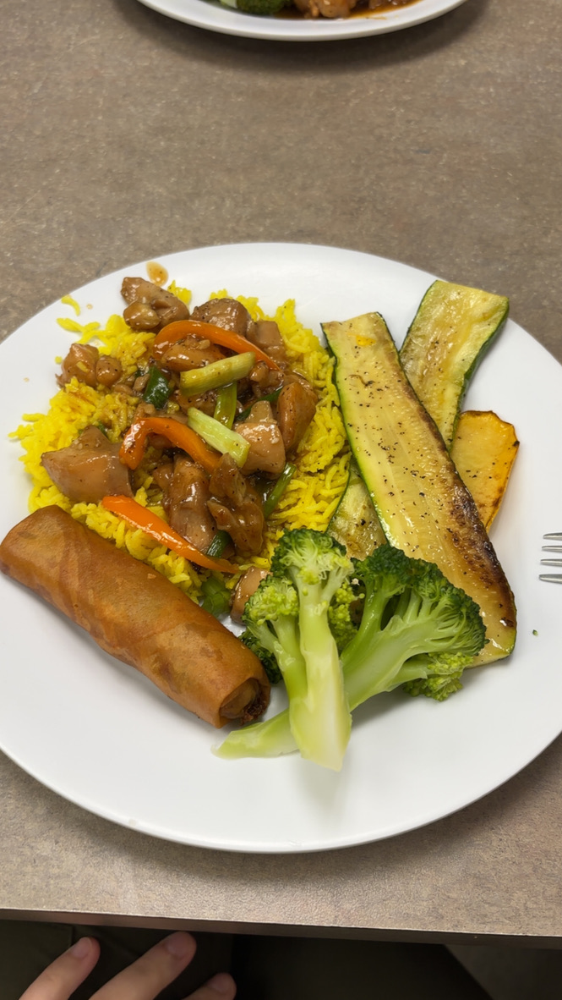
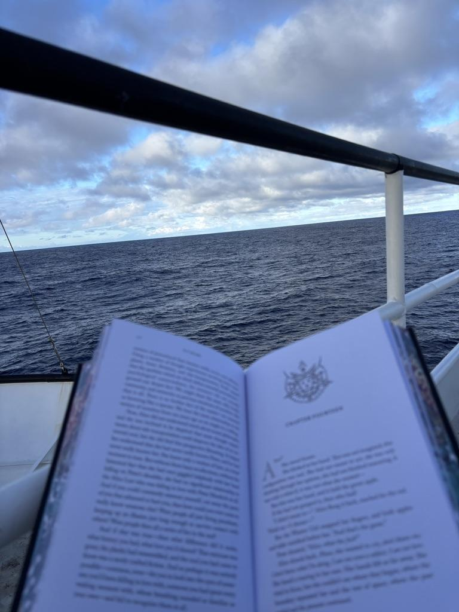
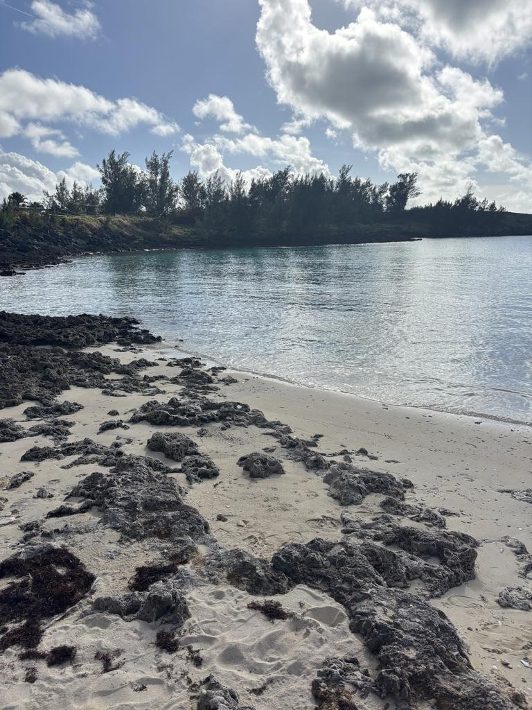
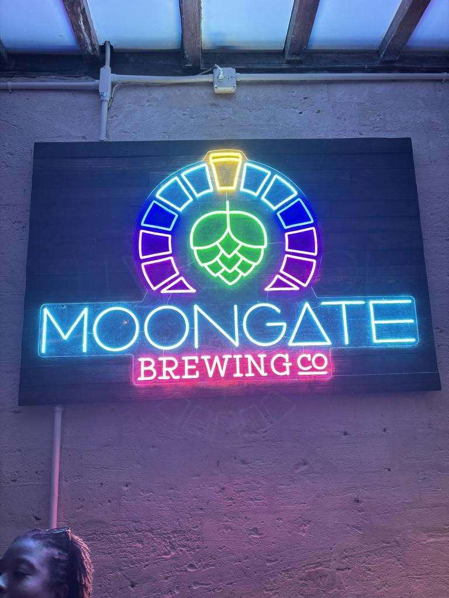

University of South Carolina
Peng Lab in Marine Microbial Ecology
OFP Cruise 2025: R/V Atlantic Explorer at the BATS Site
October 20-27, 2025 | Jordan Lehman

Howdy friends,
This past week has been a whirlwind of salt air, science, and seriously good food aboard the R/V Atlantic Explorer! We sailed out from the Bermuda Institute of Ocean Sciences (BIOS) for a six-day research cruise at the BATS site, the Bermuda Atlantic Time-Series Study, which has been collecting monthly oceanographic data since 1988. That's decades of ocean records to compare our own data to!
Getting Started at BIOS
I arrived in Bermuda on October 20, and wow, what a stunning place to start a cruise. After figuring out taxis (shoutout to locals who are way too nice), I met up with Nick and Casey at BIOS, met the crew, and had our safety meeting. Captain Patrick and his team immediately made us feel welcome. Our marine techs, Jace and Tyler, were our go-to problem solvers and instrument gurus, while Rory kept everything humming along behind the scenes. We got a full tour of the ship. The labs, deck equipment, galley... everything felt full of energy and purpose. We officially left port early the next morning, October 21, and right into safety drills, including a hilarious race to get into our bright red immersion suits that made us all look like Among Us characters. Casey totally smoked the competition!
Life at Sea and Research Work

Once out at the BATS site, it was all hands on deck. Our work centered on filtering seawater collected from CTD casts at different depths, from just 10 meters all the way down to 4,550 meters. Using 0.2 µm filters, we captured microbes to later analyze RNA and DNA, revealing what's alive and active across the water column. When those diaphragm pumps fired up, they were very loud and we realized we had only tested them at a much lower PSI in the lab.

Jace and Tyler walked us through setting up the CTD rosette, and we got to help with prep, deployment, and recovery. It was super nice that they allowed us to help but also gave us very in-depth explanations of what we were doing so we understood why we were doing certain things. Everyone on the cruise was very excited for us to be on our first cruise and were very helpful and patient with us when we didn't know something. By days two and three, Casey and I were feeling much more confident and comfortable in our environment and with our work. We became total pros, folding filters to fit perfectly into cryo tubes, labeling samples, and working efficiently. We ended the week with 29 filter samples, which is greater than our original goal of 20, so I am incredibly happy with how our sample collection went in just six short days!
OFP Mooring Deployment

One of the coolest things we watched was the Oceanic Flux Program (OFP) mooring deployment. The mooring is a massive structure that holds sediment traps and sensors that reach all the way to the seafloor. Once deployed, it measures how particles move through the ocean and track long-term particle flux in the ocean. I only watched a small portion of the mooring deployment but even watching these little bits was mesmerizing. Seeing how organized everything was and how easily everyone was communicating with each other to achieve this laborious task was inspiring.
The OFP team, including Rut Pedrosa, JC Weber, and Chase Glatz, shared a ton about their research tracking particle flux and studying ATP and genomic data from the water column. We also met Rachel Foster and Tove Seyfrin from Stockholm University, who are studying plankton, and Enrico Piperno from Stanford, who used a continuous-flow microscope to view plankton and organic matter. His setup was one of the coolest pieces of gear I've seen.
Food, Fun, and Ocean Views

Now for the really important science: meal ratings. The food on board was top-tier. Eggplant Parmesan and burger day tied for first place in my book, but honestly every meal was five stars. The cooks were total legends and their good vibes made every day brighter. Meal times were the parts of the day that I always looked forward to and enjoyed immensely.

We had calm seas for almost the entire cruise, just one day of rain, which, of course, came with a double rainbow. The evenings were gorgeous; this was when I spent some time out on the decks watching the sunset and reading my book. My favorite moments were watching the sun set over the North Atlantic, playing the community Wordle game with everyone (which I won btw), and chatting with the crew about their paths into ocean science. Everyone had a unique story but they all ended up in the same place and were so happy to be there.
Wrapping Up

We docked back in Bermuda on October 27 feeling tired (so many naps were taken!) but thrilled. After unloading OFP equipment, we joined Rachel and Tove for a walk along the Railway Trail, which was a very nice walk after being on a boat for six days, and swam at a crystal-clear beach. The water was so clear that you could see all the fish swimming right up to you! I love ocean fish so much so it was really cool getting to see them so close.

To celebrate a successful cruise, we had a barbecue at "Ronnie's Bar and Grill," which was really just a little area of the BIOS campus that has been converted into an outdoor bar area, but it was so much fun! Eric (Head Engineer) and Ronnie were grilling legendary wings that were the best chicken wings I have ever had and I will be dreaming about them for years to come. Before the sun even set, the crew broke out karaoke. With a lot of convincing from the masses, Casey and I performed a duet of Before He Cheats and I think we killed it personally. The rest of the evening was filled with karaoke, ladderball, ping pong, and good vibes.
On our last full day in Bermuda, we filtered our DNA-SIP samples, explored St. George's, grabbed postcards, and had dinner with the whole science team. It was the perfect end to a perfect first cruise.
All in all, this voyage was beyond anything I expected as it was productive, fun, and full of the best crew and scientists you could ask for. I'll never look at the North Atlantic the same way again, and I'm already counting down to the next one.